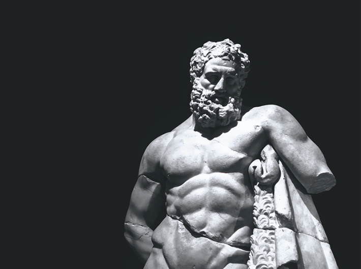

Human body mass is at least 30 percent muscle, but most of us do not realize how much all this brawny tissue does to help us thrive.
“The biggest misunderstandings about muscle and strength are that they’re superficial and secondary aspects of our lives,” says author and journalist Michael Joseph Gross. “And that they’re mainly important for younger people and athletes.” These misconceptions are at the core of his new book Stronger: The Untold Story of Muscle in Our Lives.
In Stronger, Gross takes a deep dive into the evolution of humanity’s understanding of muscle and fitness. From ancient Greek muscle myths and the early roots of what we now call progressive resistance training, to the ways science began to reshape our perception of physicality during the age of enlightenment, to the women and men who have pushed the bounds of modern bodybuilding over the past century, the tale Gross tells of our relationship to muscle and strength is both provocative and practical.
We spoke with Gross about the link between Homer and fitness, outdated perceptions of how muscle relates to gender, and the many ways muscles can improve the health of the body and the brain.
What do you think is most misunderstood about muscle and strength?
When we say the words “muscle” or “strength,”a lot of people picture a big bodybuilder’s flexing biceps, and the bodybuilder is usually a man. But muscle and strength are so much more than that. Really these are matters of existential significance for every one of us through our whole lives. Muscle is the most plentiful tissue in the human body. It is what moves us, as everybody knows, and although most people can take mobility for granted when we’re younger, declining strength as we get older can become extremely limiting if we don’t work hard to keep our muscles strong into our last days.
Muscle is also the main engine of metabolism. It’s the reservoir of proteins allowing for cellular growth and regeneration from childhood through old age, and it’s the sink for disposing of blood sugar after every meal we eat. Stronger muscles make bones stronger, too, preventing osteoporosis and reducing risk of fractures if we fall when we get older. Muscle and strength are also important for mental health, in ways we’re only starting to understand. Strength training can help to treat depression and anxiety and slow cognitive decline. Lifting weights even increases the size of the brain’s posterior cingulate cortex, which is the seat of empathy and emotional memory and is the first part of the brain to atrophy in people who have Alzheimer’s disease. So muscle and strength are key to everyone’s well-being in the most broad-spectrum way.
Your book explores the long-held perception that physical and intellectual strength don’t go together, but you also write about many people who are both accomplished lifters and accomplished academics. Why do you think this misconception is so persistent?
The brain-versus-brawn myth is just a bad habit, but a hard habit to kick since it’s thousands of years old. Sometime around the fourth century B.C., trainers and doctors started fighting a professional turf war, with our bodies as the contested territory between them. Trainers have coached athletes to strive for excellence, and doctors have counseled patients to strive for balance. And consistently, athletes with a lot of muscle mass have been set up on both sides of that conflict as examples of what to be, or what not to be. The most famous doctor in ancient Rome, Galen of Pergamon—who might be the most influential doctor of all time—said that training to build mass could actually suffocate the soul. That idea got repeated so often, it came to seem like common sense, even though it has no legitimate basis in biology.
What would it look like if, every time we heard the word “muscle,” the first people we thought of were grandmothers.
Can you explain the “athletic paradox?”
The “athletic paradox” is a phrase that comes from Charles Stocking, who teaches at the University of Texas at Austin. He may be the only Homeric scholar with a junior state powerlifting record in the squat. He may also be the only person in all of academia with a joint appointment in classics and kinesiology—the study of human bodily movement. About a third of Stronger is built on the story of Stocking’s life and work.
In one of our conversations, he talked about the “athletic paradox” while trying to answer this big question: What does athletics have to do with happiness and well-being? “The paradox of athletics,” he said, “is that one trains and competes for improved life force, but always at risk of death.” In other words: Any training session or competition involves a delicate balance between, on the one hand, applying enough stress to the body to make the body respond by rising to meet the demands of that stressor—and on the other hand, relieving that stress in the right way at the right time to avoid overwhelming or breaking the body. The athletic paradox fuses two things that may seem opposed but in reality are united: effective training has to be based on empirical knowledge, and it has to respect uncertainty and contingency of circumstance. And there is no simple, formulaic way of solving that paradox. You have to keep solving it every day, in every training session, even in every set and every rep.
Can you explain the meaning behind the “Weary Hercules?”
The meaning of this statue has changed a lot over the centuries. The demigod of strength, Hercules was one of the original action heroes. The story of his life was a series of labors—life-and-death struggles that were punishments by the goddess Hera. The punishments were pretty senseless—he was basically punished for being born in the wrong place at the wrong time—and the unfairness of that helped make him a hero to all kinds of people. The labors of Hercules involved so many different kinds of challenges and suffering that anyone could find something to identify with in his story. Athletes, for their part, wanted to emulate his example because of his extraordinary strength. The “Weary Hercules” was the most popular style of sculpture of the hero, showing him at rest after completing the last of his mythic labors and looking just absolutely massive, more hugely muscular than almost any other ancient statue.
In ancient Rome, two copies of the Weary Hercules, each 10 feet tall—twice the height of the average Roman man—stood in a very grand public bath. The two statues were situated so they were the first thing a man would see at the end of a training session. And these statues set an example of a different aspect of the hero than all those amazing feats of his labors. The Weary Hercules set an example of the need to rest after exertion. Strikingly, the only athletic training manual that survived antiquity, the Gymnasticus, written by Philostratus in the third century A.D., says that athletes should not train to look like this statue, because its huge amount of muscle symbolized punishment. The Gymnasticus said that athletes should have symmetrical muscle—not huge muscle—associated with freedom as opposed to punishment. When the Roman Empire fell, these two statues were lost, and centuries later, after they were recovered, people took a very different set of lessons from them. By the 20th century, the main impresario of bodybuilding said the Weary Hercules was what a bodybuilder should look like because it personifies power. But that’s not what ancient Romans would have seen in these statues.

WEARY HERO: Hercules was the demigod of strength, who faced endless labors throughout his lifetime as punishment from his mother Hera for his father’s philandering. A pair of popular sculptures of Hercules in Rome showing the demigod thick with muscle were meant to remind athletes to rest after exertion. Training manuals from antiquity suggested that so much bulk was synonymous with punishment. But in the 20th century, bodybuilders began to idealize Herculean builds as signifying power instead of suffering. Image by Ella_Ca / Shutterstock.
You write “if you remember just one Greek word from the book … let kairos be it.” Why?
One great story in the Gymnasticus is about a wrestler named Gerenos who won a victory at Olympia and went on a crazy bender. He got drunk, and he stayed drunk for days, and then he showed up for training with his coach. The coach got so angry at Gerenos for his lack of discipline, he forced Gerenos through the training session—which put the athlete under much more stress than his body could take—and Gerenos died. Philostratus tells that story as an example of bad coaching, the kind of coaching that sticks to the plan and follows the rules no matter what—as opposed to the good coaching that happened at Olympia, where Philostratus said coaches do not train by prescription, but provide exercises all improvised for the right time. The Greek word translated as time in that sentence is kairos. Different scholars interpret the word in slightly different ways. One calls it the ability to recognize the “right” moment and, knowing the right moment, to take decisive action.
Charles Stocking pointed out to me a core meaning in this concept that can be a tremendous source of power for anyone who has any practice of athletic training. Remembering kairos is a way of recognizing that whatever plans we have, and whatever goals or ideals we may be pursuing, the most important thing in the practice of training is to perceive and respect the reality of the present moment, to act according to our best judgment of how much stress we can take—or according to the best judgment of trainers who have shown their judgment can be trusted.
I want to be clear that making kairos the guiding principle of training does not mean always making the most conservative choices in training, and it definitely doesn’t mean always taking the easy way. It means being rigorously honest about finding the level of ambitious challenge that is appropriate for you, as you really are right now, and then striving to work at that level.I think people who develop a robust sense of kairos are the ones who will probably be able to navigate the athletic paradox, discussed earlier, with the most success for the longest time.
Jan Todd has a fascinating story. What does it tell us about women and strength training?
Serious scientific research on strength training for women had barely begun in 1973 when Jan Todd started lifting weights and in less than 18 months went from being an absolute beginner to breaking a world record in the deadlift that had stood since the 1920s. She was widely considered to be the strongest woman in the world for about a decade, and then she went on to become an academic historian studying the history of strength, especially women’s strength, as well as the co-founder and director of one of the world’s largest archives of sport history. The second part of my book is based on the story of her life and work. And it’s remarkable that more than 50 years after Jan Todd started lifting weights, a lot of basic facts about women’s strength are not as widely known as they should be—partly because fear gets in the way.
Social scientists report that many women, even including college athletes, still have a lot of concerns and hesitations about weight training, including concerns about safety and about getting bulky. On safety, the research is clear: with proper form and progression—ideally, at least initially under the supervision of a qualified trainer—weight training is safe for everyone from adolescents to the oldest people, of any gender. And for hormonal reasons, it’s rare for women to build bulky muscles unless they’re trying hard to do that. The first scientific strength training guidelines for women, published in 1989, said women and men should train in the same basic way, using similar programs and exercises. Jan Todd was a co-author of those guidelines, and when she and a colleague reviewed the research again 30 years later, they found the main conclusion held firm. From what Jan Todd says, maybe the most important thing for women to know about strength training is that strength can transform a woman’s whole life. In her words, as a woman, if you feel physically stronger, you’re going to be less afraid, more willing to try new things, and have more of a sense—I think—of yourself as a whole person.
“The paradox of athletics is that one trains and competes for improved life force, but always at risk of death.”
The latest research makes it pretty clear that elderly people benefit from resistance training. What do you want older people to know about exercise?
It’s never too late to start, and there is almost always something you can do to get stronger. That’s the overarching message I took from the work of Maria Fiatarone Singh, the geriatrician who is the central figure in the last part of my book. In 1988, at a nursing home in Boston where many residents were Holocaust survivors, Maria Fiatarone Singh taught nine frail older people to lift weights at high intensity—meaning, she taught them to lift weights that were heavy relative to each individual’s maximal strength. This had never been done before because doctors believed it might cause cardiac events. But there were no adverse consequences, only good outcomes. Everyone in this pioneering group of lifters got much stronger, and two of them got so strong they were able to walk without their canes. Fiatarone Singh went on to run randomized controlled trials of high-intensity progressive resistance training as treatment for nearly every chronic disease you can name. She found that lifting weights can be an alternative therapy for some diseases, such as depression, and a complementary therapy for others, such as type 2 diabetes, and a standalone treatment for other conditions, such as frailty or dementia, for which we have no clearly effective drug treatments.
Fiatarone Singh points out that strength training is the only form of exercise that improves all forms of fitness that you need to the end of your life. Strength training not only improves strength, it also improves aerobic fitness and balance. She also says that walking and general physical activity are not enough to counteract the age-related losses of strength and muscle that lead to frailty in many older people’s lives. Only weight training can do that. She says that for her as a geriatrician, weight training is the most powerful medicine we actually have. It’s an audacious claim, and there is now a huge body of research from around the world that backs her up.
Can you explain a bit about the economic costs of frailty?
Frailty is the syndrome of aging involving muscle loss, strength loss, slowness, and fatigue. It is a major risk factor for falls and hip fractures. And frailty makes health care much, much more expensive. According to data from Germany, the annual cost of health care for people who are frail is about five times more than the cost of health care for people who aren’t frail. According to data from Australia, the annual costs of care related to falls in the state of New South Wales was projected to increase by tenfold—not counting inflation—between 2008 and 2051. The same data showed that by 2051, it would become impossible to care for hundreds of thousands of older Australians injured in falls each year without adding tens of thousands of hospital beds. The researchers described the likely outcome of this scenario as being catastrophic. Every country in the world that has an aging population will be facing a similar scenario unless we all start working to help get older people stronger. The more data like this I read, the more I wonder what the world would look like if, every time we heard someone say the word “muscle,” the first people we thought of were not big bodybuilders flexing their biceps, but our grandmothers.
Has your research changed how you live in any way?
Like everybody, I don’t always live up to my own ideals. But very nearly every day, no matter what else is going on in my life, I now make weight training a priority. To support that training, I eat a lot more protein than I used to. And the more I’ve made those changes, the more I’ve come to experience these habits not just as ways of taking care of myself, but as what makes it possible for me to help take care of others. To be really specific: When I think about skipping leg day, I think about how I want to go on fun vacations with my husband when we’re in our 90s. And then I start putting the plates on the leg press. 
Lead image: Elenyska / Shutterstock